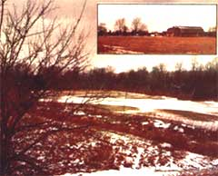

"The days of the free homestead aren't over," says Morenci, Michigan's Del Gasche. "There really is 'free' acreage out there all over the continent just waiting for you to claim it as your own . . . if you know how to go about it."
My wife, Fran, and I own 36.5 acres of land plus farm buildings. The property contains a spring-fed, year-round creek . . . 10 acres of bottomland surrounded by 15 acres of woods . . . and pastures, sandy hills, and fencerows. It's a small farm filled with secret places that we share with hawks, owls, deer, and muskrats. And, best of all, the place didn't really cost us anything. We, in effect, got it for free.
We actually started toward our present, pleasant "landholder for free" status a few seasons back. That was when we purchased 120 acres with $20,000 down and a land contract for the remaining $34,000, payable at $1,000 a year on the principal and 5% interest on the balance.
What? You say you don't have $20,000? Well, we didn't either until we'd saved for several years. And the amount is academic, anyway: We could have purchased our original 120 acres with a far smaller down payment than the one we made. Nothing, in short, would have changed except the actual dollar figures involved. The principle - the "secret" of winding up with a farm for free - would have remained the same.
And part of that secret was the fact that we didn't really want 83.5 of those 120 acres in the first place. We didn't want the 83.5 acres of "good" field-crop land that all the local farmers wanted. No. What we were after was the 36.5 acres of "worthless" creek bottom, buildings, woods, etc. that we knew would make an ideal MOTHER-type homestead.
This, of course, gave us a tremendous advantage in any land deal we undertook. Everyone else looked at the whole 120 acres and tried to balance the cost of "improving" the rough 36.5 acres against the profit he or she could make farming those other 83.5 acres of field crops. And then the other potential purchasers would mentally calculate how long they'd have to farm the whole 120 acres to make enough money to be able to buy yet another piece of property and expand their holdings even further.
We, on the other hand, had no intention of "improving" that rough 36.5-acre tract at all. We liked it just the way it was. Furthermore, we figured that 36.5 acres was a plenty big enough "place in the country" for us. We had no desire to parlay it into "bigger and more efficient" landholdings of any kind. As a matter of fact, we didn't even want to farm the "good" 83.5 acres that went with it.
So we "cash-rented" those 83.5 acres to a local farmer for enough money to cover our land contract payments and real estate taxes for the whole 120 acres. And we did that for four full years . . . four years during which our farm earned all the land and tax payments that were due, without our having to lift a finger.
We then checked out the local market and discovered that we could sell those 83.5 acres for $800 an acre. (That's a total of $66,800 for 36.5 fewer acres than we had paid $54,000 for . . . just four years earlier!)
And so we sold our "good" land. But not through a real estate salesman. We knew the property was worth $800 an acre so we simply offered it for that amount to a neighboring farmer . . . and he took it.
It cost us $1,000 to have the 83.5 acres surveyed and a legal description drawn up. We paid another $100 to a local lawyer for handling the contract. And we accepted $6,000 as a down payment from our neighbor and allowed him one full year in which to come up with the rest of the sale price. (Our lawyer drew up a land contract which stated that no interest would be charged on the principal if it were paid within 90 days. After that, 10% interest retroactive to the signing of the contract would be due and the entire amount would be due one year from the contract's closing.)
Yes, we could have made more money if we'd taken out a 30-year contract with our neighbor at a higher interest rate than the 5% we were paying on the contract we already had. But - instead of living for 30 years with all the loose ends of making payments and receiving payments - we elected to "take the money and run". After all, the purpose of the whole transaction was to provide us with a place in the country . . . not to put us into the real estate business.
As it turned out, our buyer took nearly a year to arrange his financing . . . and that year cost him $6,080 in interest. It also cost us one year's loss of rent and one year's interest on our own debt (a total of $4,500) .
The settlement, then, looked like this: We received a final, lump-sum payment of $66,343.35 from our buyer. From this we had to pay $50 for title insurance, $25 for document preparation, $4.00 for recording fees, $73.70 for state tax stamps, $597.40 for real estate taxes . . . and $30,500 went to pay off the balance on our original land contract. This left us with $35,093.25 ($66,343.35 minus $31,250.10) in our pockets.
In other words: Fran and I walked into the lawyer's office owning 120 acres of land encumbered by a $30,500 debt . . . and we walked out owning 36.5 acres free and clear and carrying a check for $35,093.25! Even when you subtract the capital gains tax we paid on the deal, we still got more than our original Investment back . . . plus 36.5 acres with buildings free and clear. Our farm, in short, was free!
If you'd like to work the same economic miracle for yourself, just remember the facts of life in today's real estate market: Two kinds of property - the mini-farm of a few acres and the big farm made up almost entirely of tillable fields - are in great demand . . . and both types of property are overpriced,
There are, on the other hand, countless small farms and family holdings of 60, 80, 120, and 160 or so acres scattered throughout the United States and Canada. And a great many of these places are "mixed bag" properties . . . various amounts of cleared and tillable land combined with some rough acres and a few old family farm buildings. Big farmers, in general, look at such acreage and are put off by the rough land and old farm buildings (which they don't want to fool with). And back-to-the-landers generally never even look at these properties at all (because they want only 20 or 40 acres, instead of 80 or 100 or more).
And right there is where you come in. Save up a nest egg. Then use it to buy a large piece (larger than you really want) of "mixed bag" - both tillable and rough - land. Next, cash-rent out the good fields while the local real estate market rises. And finally, survey out and sell the tillable (with big machinery) acreage for more than you paid for the whole piece of property . . . leaving you - free and clear - with a little "picturesque" homestead, and money in your pocket.
Play this "secret" game right (the way we've done it) and you shouldn't have any trouble duplicating our success. Just don't get greedy. Don't make a fetish of buying at the absolute bottom dollar and then lying awake nights scheming to sell at the very maximum top dollar.
Buy at a fair price, wait for the market to go up, split your property, and sell at a fair price. Let our inflationary economy do the work for you. Relax. Be satisfied with getting the little homestead of your dreams for nothing . . . with, maybe, some cash money left over. That's what we've done. And we see no reason why you can't do it too.
|
 |
|
|